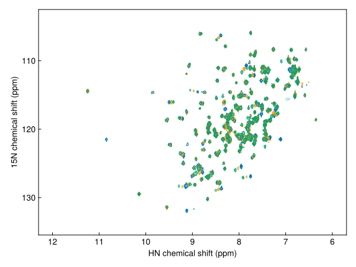

Makie plotting
NMRTools provides a Makie extension with nmrplot and nmrplot! for interactive or publication-quality figures while preserving NMR plotting conventions (reversed chemical-shift axes, sensible defaults for 1D/2D/3D).
To activate the extension, load NMRTools and a Makie backend (for example CairoMakie or GLMakie):
using NMRTools
using CairoMakieQuick start
1D spectrum
fig = nmrplot(exampledata("1D_1H")) Downloading artifact: 1D_1H
Set the plot range with the xlims option - the spectrum will rescale vertically to match:
fig = nmrplot(exampledata("1D_1H"), xlims=(-1, 4.5))
Use the mutating form to overlay additional spectra onto the same axis:
nmrplot!(fig, exampledata("1D_1H") / 2)
2D spectrum
spec2d = exampledata("2D_HN")
fig = nmrplot(spec2d)
Add 1D projections along each axis:
fig = nmrplot(exampledata("2D_HN"), xprojection=true, yprojection=true)
Plot a series of 2Ds in one call:
fig = nmrplot(exampledata("2D_HN_titration"), legend=:topleft)
Or add spectra one-by-one with nmrplot! and then add a legend in standard Makie style:
dats = exampledata("2D_HN_titration")
fig, ax = nmrplot(dats[1], title="", xlims=(-120, -128))
nmrplot!(fig, dats[5])
nmrplot!(fig, dats[10])
axislegend(ax)
When plotting a small number of 2Ds, Makie's default cycle is used instead of a rainbow gradient:
fig = nmrplot(exampledata("2D_HN_titration")[[1, 5, 10]])
Contours are drawn at positive and negative levels by default. You can control colours and disable negative contours:
fig = nmrplot(spec2d; negcontours=false)
or adjust negative contour colours:
fig = nmrplot(spec2d; negcolor=:red)
Pseudo-2D spectra (one frequency + one non-frequency dimension)
Choose a style with the style keyword:
style=:heatmap(default)style=:flat(overlaid 1D slices)style=:waterfall(3D slice view)
Example pseudo-2D diffusion plot:
diffusiondata = exampledata("pseudo2D_XSTE")
# set the gradient strengths - which varied from 2% to 98% of the max, over 10 points
diffusiondata = setgradientlist(diffusiondata, LinRange(0.02, 0.98, 10))
fig = nmrplot(diffusiondata, xlims=(7, 9.5))┌ Warning: a maximum gradient strength of 0.55 T m⁻¹ is being assumed - this is roughly correct for modern Bruker systems but calibration is recommended
└ @ NMRTools.NMRBase ~/work/NMRTools.jl/NMRTools.jl/src/NMRBase/nmrdata.jl:306
The default is a heatmap, and flat/waterfall styles are also available:
fig = nmrplot(diffusiondata, xlims=(7, 9.5), style=:flat)
fig = nmrplot(diffusiondata, xlims=(7, 9.5), style=:waterfall)
Plot placement and layout
nmrplot works directly with Makie layouts and can be composed with other Makie plots:
fig = Figure()
nmrplot(fig[1, 1], exampledata("1D_1H"); title="", xlims=(-1, 4.5))
nmrplot(fig[1, 2], exampledata("2D_HN"); title="", xlims=(6, 10))
scatter(fig[2,:], randn(100))